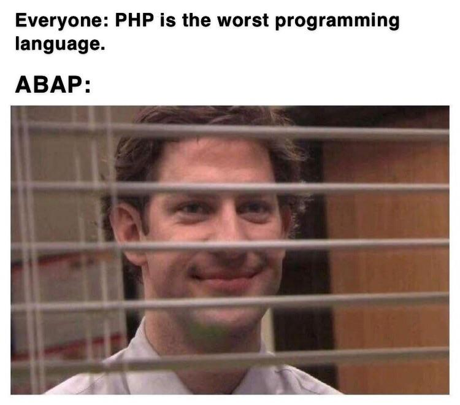

Класс для удобного манипулирования датами в ABAP


Настало время делиться своей болью и страданиями. Меня зовут Носов Роман, и, мне очень стыдно в этом признаться, но я алкоголик иногда пишу на ABAP, чтобы не умереть с голоду.
Для тех, кто в танке и никогда не слышал, что это такое: ABAP — это внутренний язык, на котором программируют (допиливают напильником) разные продукты от SAP . От допиливаний страдают, как сама система, так и программисты с пользователями. И всё действо со стороны больше напоминает истязания грешников в каком-нибудь круге ада по Данте.
А SAP в свою очередь — очень дорогая немецкая одинэска компания которая делает ERP системы для крупных бизнесов.
Как сказал неизвестный мудрец в комментариях на хабре:

И тут мне захотелось немного уменьшить градус боли (по части работы с датами)
Для начала немного теории:
В ABAP для хранения даты встроен специальный тип данных — DATS (или сокращенно — D). Представляет он из себя строку из 8 символов, в которой хранится по порядку: год,месяц,день.
Например: '20190102' — это второе января 2019 года.
Так же, для этого типа данных перегружены действия + и -. Которые отнимают и прибавляют дни к дате, или считают разницу в днях между двумя датами.
DATA: lv_dats TYPE dats,
lv_dats2 TYPE dats,
lv_int TYPE i.
" -/+ между dats и int возвращает dats с отнятыми/прибавленными днями
lv_dats = '20190102'.
lv_dats = lv_dats - 5.
WRITE lv_dats. " 28.12.2018
" -/+ между dats и dats возвращает int — разница между датами в днях
lv_dats2 = '20190101'.
lv_int = lv_dats2 - lv_dats. " 01.01.2019 - 28.12.2018
WRITE lv_int. " 4
Но что делать, если очень хочется сделать инкремент месяца (не + 30 дней, а именно получить то же число следующего месяца, независимо от длины месяца (28-31))?
Для этого есть громоздкий функциональный модуль RP_CALC_DATE_IN_INTERVAL. Умеет складывать/отнимать годы/месяцы/дни и возвращает валидную дату.
DATA: lv_dats TYPE dats.
lv_dats = '20190215'. " 15.02.2019
CALL FUNCTION 'RP_CALC_DATE_IN_INTERVAL'
EXPORTING
date = lv_dats
days = 0
months = 1
signum = '+'
years = 0
IMPORTING
calc_date = lv_dats.
write lv_dats. " Искомое 15 марта
Но вы точно хотите использовать в своих программах вот такие уродливые конструкции?
Отдельным пунктиком следует упомянуть про развлечения программистов с красивым форматированием даты. Огромные полотна кода с выдёргиваниями подстрок из даты, и конкатенации в нормальном виде. Пример
А если очень хочется вместо номера месяца видеть его название? Май, апрель....
А если очень хочется видеть названия месяцев на том языке, на котором запущен SAP? :) Огромные просторы для танцев с бубном и изобретаний велосипедов!
Z* разработки в SAP — бесконечная фабрика велосипедов

Итак, нам нужен класс, который мог инкапсулировать в себе стандартный dats, но предоставлять удобный API для работы с датами, максимально скрывая уродливость языка ABAP.
Он должен уметь:
- Прибавлять дни/месяцы/годы к текущей дате
- Иметь адекватные геттеры/сеттеры для дней/месяцев/годов, скрывая работу с подстроками
- Получать названия месяцев на заданном языке
- Метод to_string, который возвращает строковое представление даты по заданной маске (like printf)
Реализация:
Создаём класс. В его свойствах будем хранить:
- Язык, который будет передаваться в конструкторе — (по умолчанию — язык системы)
- Дата, которая аналогично будет передаваться в конструкторе — (по умолчанию — текущая)
- Таблица названий месяцев для выбранного пользователем языка
- Константы для метода to_string( )
DATA:
gt_month_names TYPE STANDARD TABLE OF t247 .
DATA gv_language TYPE lang .
DATA gv_date TYPE dats .
CONSTANTS nv_long_year TYPE string VALUE '$yyyy'.
CONSTANTS nv_short_year TYPE string VALUE '$yy'.
CONSTANTS nv_month_name TYPE string VALUE '$m'.
CONSTANTS nv_short_month_name TYPE string VALUE '$mmm'.
CONSTANTS nv_month_number TYPE string VALUE '$mm'.
CONSTANTS nv_day TYPE string VALUE '$dd'.
Конструктор и статический метод create
" Просто присваиваем значения
METHOD constructor.
gv_language = iv_language.
gv_date = iv_date.
ENDMETHOD.
METHOD create. " Что-то отдалённо похожее на фабричный метод,
" только возвращаем инстанс самого класса zcl_date.
" Таким образом избавляемся от громоздкой конструкции create object*
CREATE OBJECT ro_instance
EXPORTING
iv_date = iv_date
iv_language = iv_language.
ENDMETHOD.
Прибавлять и вычитать будем уже известным функциональным модулем RP_CALC_DATE_IN_INTERVAL, но спрячем его поглубже, чтобы не было так страшно. Наружу (public) будут торчать два минималистичных метода: plus/minus
METHOD date_calculation.
CALL FUNCTION 'RP_CALC_DATE_IN_INTERVAL'
EXPORTING
date = gv_date
days = iv_days
months = iv_months
signum = iv_sign
years = iv_years
IMPORTING
calc_date = gv_date.
ENDMETHOD.
METHOD minus.
date_calculation( iv_days = iv_days
iv_months = iv_months
iv_years = iv_years
iv_sign = '-' ).
ENDMETHOD.
METHOD plus.
date_calculation( iv_days = iv_days
iv_months = iv_months
iv_years = iv_years
iv_sign = '+' ).
ENDMETHOD.
Получать названия месяцев на текущем языке будем с помощью ФМ MONTH_NAMES_GET, который будем дёргать тогда, когда осознаем, что для этого языка у нас нет названий.
METHOD init_month_names.
CALL FUNCTION 'MONTH_NAMES_GET'
EXPORTING
language = gv_language
TABLES
month_names = gt_month_names
EXCEPTIONS
month_names_not_found = 1
OTHERS = 2.
ENDMETHOD.
METHOD get_month_name_by_number.
DATA ls_month LIKE LINE OF gt_month_names.
" Есть ли вообще записи для текущего языка?
READ TABLE gt_month_names
INTO ls_month
WITH KEY spras = gv_language.
IF sy-subrc <> 0.
init_month_names( ).
ENDIF.
CLEAR ls_month.
READ TABLE gt_month_names
INTO ls_month
WITH KEY
mnr = iv_number
spras = gv_language.
rv_month_name = ls_month-ltx.
ENDMETHOD.
Ну и метод to_string( ). Который заменяет ключевые слова в маске значениями.
METHOD to_string.
DATA:
lv_day TYPE num2,
lv_month_name TYPE string,
lv_month_number TYPE num2,
lv_short_month_name TYPE string,
lv_short_year TYPE num2,
lv_long_year TYPE num4.
lv_day = get_day( ).
lv_month_name = get_month_name( ).
lv_month_number = get_month_number( ).
lv_short_month_name = get_short_month_name( ).
lv_short_year = get_short_year( ).
lv_long_year = get_year( ).
" year
REPLACE ALL OCCURRENCES OF nv_long_year IN iv_format WITH lv_long_year IGNORING CASE.
REPLACE ALL OCCURRENCES OF nv_short_year IN iv_format WITH lv_short_year IGNORING CASE.
" month
REPLACE ALL OCCURRENCES OF nv_short_month_name IN iv_format WITH lv_short_month_name IGNORING CASE.
REPLACE ALL OCCURRENCES OF nv_month_number IN iv_format WITH lv_month_number IGNORING CASE.
REPLACE ALL OCCURRENCES OF nv_month_name IN iv_format WITH lv_month_name IGNORING CASE.
"day
REPLACE ALL OCCURRENCES OF nv_day IN iv_format WITH lv_day IGNORING CASE.
rv_string = iv_format.
ENDMETHOD.
Осталось прикрутить геттеры/сеттеры. и доработать API.
Что в итоге получилось — можно посмотреть здесь: github.com/JustAddAcid/abap_date
Результаты
- Минималистичные методы plus/minus
lo_date = zcl_date=>create( '20200101' ). " 01.01.2020
lo_date->minus( iv_years = 2 ). " 01.01.2018
lo_date->plus( iv_days = 3 ). "04.01.2018
lo_date->plus( iv_months = 1 ). "04.02.2018
" Несколько аргументов
lo_date->plus(
iv_days = 1
iv_years = 2
). " 05.02.2020
- Геттеры/сеттеры
- Метод get_month_name( ), получающий названия месяца
data: lo_date type ref to zcl_date,
lv_dats type dats,
lv_month type string.
lo_date = zcl_date=>create( ).
lo_date->set_year( 2001 ).
lo_date->set_month_number( 9 ).
lo_date->set_day( 11 ).
lv_dats = lo_date->get_date( ).
lv_month = lo_date->get_month_name( ).
write lv_dats. " 11 сентября 2001
write lv_month. " Сентябрь
- Метод to_string( ), возвращающий строковое представление даты по маске
data: lo_date type ref to zcl_date,
lv_formated type string.
lo_date = zcl_date=>create( '20200101' ). " 01.01.2020
lv_formated = lo_date->to_string( 'Месяц: $m Год: $yyyy День: $dd' ).
write lv_formated. " Месяц: Январь Год: 2020 День: 01